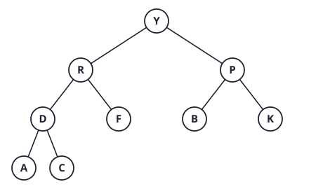
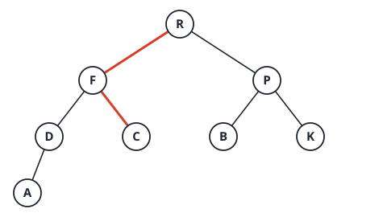
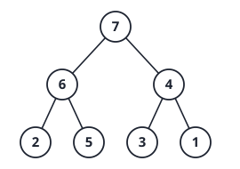
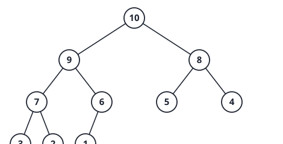
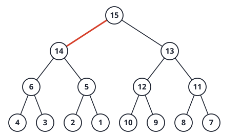
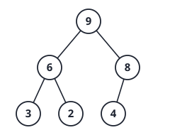

3. Heaps and heapsort
Facts
Define a max-heap. Which two properties does it have?
Answer
A complete binary tree (all levels full except possibly the last, which fills from the left) with the heap order: every node’s key is at least the keys of its children. The maximum is at the root.
In a 1-indexed array heap with n nodes, give the parent, left child and right child of node k. Which indices are leaves?
Answer
Parent \lfloor k/2\rfloor, left child 2k, right child 2k+1. Leaves are \lfloor n/2\rfloor+1,\dots,n. The last internal node is \lfloor n/2\rfloor. The height is \lfloor\lg n\rfloor.
What does fixHeap do, what must hold before it runs, and
what is its cost?
Answer
It sinks a key k placed at a root whose two subtrees are already heaps, by repeatedly swapping it with the larger child until it dominates both children. At most 2 comparisons per level (larger child, then compare with k), so \le2\lfloor\lg n\rfloor comparisons, O(\log n).
How does constructHeap work, and what is its cost?
Answer
Call fixHeap on nodes \lfloor
n/2\rfloor down to 1 (leaves are already heaps). Cost \Theta(n), not \Theta(n\log n).
Why is bottom-up construction linear?
Answer
Few nodes are high. About n/2^{h+1} nodes have height h, and each costs O(h). So the total is \sum_h \frac{n}{2^{h+1}}\cdot O(h)=O\!\left(n\sum_h \frac{h}{2^h}\right)=O(n), since \sum_{h\ge1} h/2^h=2.
Describe the two phases of heapsort and its cost, space and stability.
Answer
Phase 1: build a max-heap, \Theta(n). Phase 2: for i=n down to 2, swap the root with the last
heap element, shrink the heap, and fixHeap the root: \le 2\lfloor\lg n\rfloor comparisons each.
Total \Theta(n\log n) for best, average
and worst case. In-place (O(1)),
not stable.
How many comparisons does constructHeap make on a
decreasing array of n distinct keys,
and why is that the best case?
Answer
Exactly n-1. A decreasing array is
already a max-heap, so each fixHeap stops at once, using 2
comparisons for a node with two children and 1 for a node with one
child. In total every non-root node is compared once as a child: n-1.
Priority-queue operations on a heap and their cost.
Answer
- Find max: O(1).
- Extract max: O(\log n) (move last
key to root,
fixHeap). - Insert: O(\log n) (place at the end, sift up while larger than the parent).
- Build from n keys: \Theta(n).
- Increase a key: O(\log n) (sift up).
Merge k sorted lists with n elements in total. Method and cost.
Answer
Keep a min-heap of size k holding the current head of each list. Repeatedly extract the minimum, output it, and insert the next element from the same list. Each of the n outputs costs O(\log k), so O(n\log k) time and O(k) extra space (plus the output).
Why is the lower bound for building a heap different from sorting?
Answer
Building a heap only needs the heap order, a partial order, so \Theta(n) suffices. Sorting needs a total order, which costs \Omega(n\log n) comparisons. Heapsort pays the n\log n in phase 2.
Problems
Problem 1: trace and compare
(a) Build a max-heap from [3,9,2,8,5,7,1,6] with
constructHeap. Show the array after each
fixHeap call.
Answer
n=8, so call fixHeap at
nodes 4, 3, 2, 1.
| Call | Action | Array |
|---|---|---|
| start | [3,9,2,8,5,7,1,6] | |
| node 4 (key 8) | child 6; 8\ge6, stop | [3,9,2,8,5,7,1,6] |
| node 3 (key 2) | children 7, 1; larger 7 > 2, swap | [3,9,7,8,5,2,1,6] |
| node 2 (key 9) | children 8, 5; 9\ge8, stop | [3,9,7,8,5,2,1,6] |
| node 1 (key 3) | children 9, 7; swap with 9; at node 2 children 8, 5; swap with 8; at node 4 child 6; swap with 6 | [9,8,7,6,5,2,1,3] |
Comparisons: node 4: 1; node 3: 2; node 2: 2; node 1: 2 + 2 + 1 = 5. Total 10.
(b) Perform the first extraction of heapsort on that heap. Give the array.
Answer
Move the root 9 to position 8 and fixHeap the key 3 (the
old last element) into a heap of size 7: children 8, 7; swap with 8; at
node 2 children 6, 5; swap with 6; at node 4 no children, stop. Array:
[8,6,7,3,5,2,1\,|\,9].
(c) Heapsort sorts all inputs in \Theta(n\log n), but quicksort is usually faster in practice. Give two reasons from this course’s analysis, and one case where heapsort is the better choice.
Answer
Reasons: heapsort makes about 2n\lg n comparisons against quicksort’s average 1.39n\lg n, and heapsort jumps around the array (poor cache behaviour) while partitioning scans sequentially. Heapsort is better when you need a guaranteed O(n\log n) worst case with O(1) space, for example in a real-time system, where quicksort’s \Theta(n^2) worst case is unacceptable.
(d) Link to Dijkstra and Prim: what does the priority queue support, and which operation makes the heap version O(|E|\log|V|)?
Answer
Extract-min (done |V| times) and decrease-key (done up to |E| times, each O(\log|V|) by sifting up). The |E| decrease-key calls dominate: O(|E|\log|V|). With an array instead of a heap, extract-min is O(|V|) and decrease-key is O(1), giving O(|V|^2), better on dense graphs where |E|\approx|V|^2.
Past-year questions
Questions from past papers (SC2001/CZ2101/CE2001). Every answer was worked out and checked by code; where a circulated official solution exists it was compared, and disagreements are flagged.
AY25/26 S2 1(d) Heap Sort. A. Best-case running time O(n). B. Constructing a heap requires O(n). C. Besides the input array, Heap Sort needs an extra array to store the sorted result. D. The array [18,13,8,11,2,7,3,8,9,1] is a valid maximizing heap. E. Heap Sort is stable.
Answer
B and D.
- A false: the extraction phase is \Theta(n\log n) for any input (with distinct keys). B true: bottom-up construction is \Theta(n).
- C false: in place. E false: heapsort is not stable.
- D true. With 1-indexed positions: node 1 (18) has children 13, 8; node 2 (13) has 11, 2; node 3 (8) has 7, 3; node 4 (11) has 8, 9; node 5 (2) has child 1. Every parent is at least its children. (Checked by code.)
AY24/25 S2 1(d) For the HeapSort algorithm taught in
the lectures, what are the time complexities of getMax(),
fixHeap(), deleteMax(),
Heapifying() and constructionHeap()?
Answer
getMax(): O(1), the maximum is the rootH[0].fixHeap(): O(\lg n), the key sinks at most the height \lfloor\lg n\rfloor with at most 2 comparisons per level.deleteMax(): O(\lg n), move the last key to the root, then onefixHeap.Heapifying()(=constructionHeap(), the bottom-up build that callsfixHeapon every internal node): O(n).
(The paper lists “Heapifying” and “constructionHeap” separately. In the lecture both names mean the bottom-up build, \Theta(n). If an examiner means “insert the keys one by one”, that is O(n\lg n).)
Link. The O(n) build is not the O(n\lg n) you get from n calls of an O(\lg n) routine: most nodes sit near the leaves and sink only 0 or 1 level. As a recurrence it is T(n)=2T(n/2)+\lg n, which is master case 1 (the leaves dominate), \Theta(n). Compare mergesort T(n)=2T(n/2)+n, case 2, \Theta(n\lg n): the same tree shape, a different cost per node.
AY24/25 S1 1(c) Which statements about the HeapSort algorithm (on n elements) are TRUE? A. The worst-case time complexity ONLY occurs when the input array is sorted in reverse order. B. The best-case time complexity ONLY occurs when the input array is already sorted. C. Heapsort is an unstable sorting algorithm, meaning it does not preserve the relative order of elements with equal values. D. HeapSort is generally slower than QuickSort as the former requires additional space to construct the Heap. E. As the Heap shrinks during the sorting, we can indeed find a better asymptotic time complexity than O(n\log n).
Answer
C only.
- A, B false: heapsort is \Theta(n\log n) for every input (with distinct keys), so no input is special.
- C true: the swap of the root with the last element moves equal keys past each other.
- D false: heapsort builds the heap in place, so it needs no extra space. (It is slower than quicksort in practice because of poor cache behaviour, which is a different reason.)
- E false: the n extractions cost \sum_{i}\lg i=\lg n!=\Theta(n\log n). The shrinking heap lowers the constant, not the order.
AY24/25 S1 1(d) Given k lists with a total of n numbers, k\ge2. We design an algorithm to merge the k lists into one list sorted in decreasing order. A. If all the k lists are sorted, we have a time complexity better than O(n\log n). B. If all the k lists are sorted, we can use MergeSort to achieve time complexity O(n\log k). C. If the k lists are not sorted, we can use the following to achieve O(n\log k): 1) sort each one, 2) use a Heap to maintain the head elements of the lists, and 3) continually use getMax and Fixheap to exhaust all the n elements. D. If the k lists are not sorted, we can never achieve O(n\log k) running time. E. Regardless of whether the k lists are sorted or not, we can only achieve O(n\log n) running time.
Answer
A, B and D (A and D hold when k is small compared with n, which is how the question is meant).
- B true: merge the lists pairwise like the merge steps of mergesort. There are \lceil\lg k\rceil rounds and each round touches all n numbers, so \Theta(n\log k). The heap version (step 2 and 3 of option C without step 1) also gives O(n\log k): each of the n extractions costs O(\log k) on a heap of k heads.
- A true: n\log k<n\log n when k<n. For k=2 it is O(n).
- C false: step 1 costs \sum n_i\log n_i, which is \Theta(n\log n) (for example k=2 lists of n/2), so the total is O(n\log n), not O(n\log k).
- D true as a general statement: for k=2 unsorted lists, producing sorted output is sorting n numbers, which needs \Omega(n\log n) comparisons, while n\log 2=O(n). (If k=\Theta(n) the two bounds coincide, so “never” is loose.)
- E false: sorted lists give O(n\log k).
AY21/22 S2 1(c) Consider a heap stored in the input
array B=[90,89,70,36,75,63,65,21,18,15]. Execute
the deleteMax() function once on B. Show the content of the resultant
array.
Answer
First check that B is a max-heap (each parent at least its children): 90 over 89, 70; 89 over 36, 75; 70 over 63, 65; 36 over 21, 18; 75 over 15. Yes.
deleteMax(): return the root 90, move the
last key (15) to the root, shrink the heap to 9 keys,
then fixHeap the root:
- Root 15, children 89 and 70. The larger child is 89, and 89>15: swap. The 15 is now at index 1.
- Children of index 1: 36 and 75. The larger is 75, and 75>15: swap. The 15 is now at index 4. Its children would be at indices 9 and 10, but the heap has only 9 keys (indices 0 to 8), so it stops.
Result (heap of 9 keys): [89,75,70,36,15,63,65,21,18], and
the deleted maximum is 90. (If deleteMax is the in-place
heapsort step, the maximum is kept after the heap: [89,75,70,36,15,63,65,21,18\,|\,90].) It is a
valid max-heap: every parent is at least its children.
Link. The key 15 was the smallest key in the heap,
so it sank until it ran out of children (two levels here; the full
height of this tree is 3). A key taken from the bottom of a heap almost
always sinks far, which is the reason deleteMax costs \Theta(\log n) even though the heap property
is “mostly” satisfied.
AY21/22 S1 1(d) (MCQ) Given n entries, which statement on the time complexity of the HeapSort algorithm is true? A. Only the Best case is O(n\log n). B. Only the Worst case is O(n^2). C. The Best case is O(n\log n) and the Worst case is O(n^2). D. The Best case is O(n) and the Worst case is O(n\log n). E. Both the Best case and the Worst case are O(n^2). F. Both the Best case and Worst case are O(n\log n).
Answer
F. Building the heap is \Theta(n) and each of the n-1 deleteMax calls costs O(\log n), so the sort is O(n\log n) in the worst case. The extraction
phase costs \Theta(n\log n) on every
input (with distinct keys), so no input beats n\log n by more than a constant, and the best
case is also O(n\log n). A is false
(the worst case is also O(n \log n)), B
and E are false (never quadratic), C is false (the worst case is not
n^2), D is false for distinct keys.
(Flag: “best case O(\cdot)” statements are upper bounds, so F is true as stated. If every key is equal the extraction phase degenerates to O(n), but the course treats heapsort as \Theta(n\log n) on every input, which is the answer the question wants.)
Link. Heapsort is, with mergesort, one of the two sorts in the course with the same order of growth on every input. Its cost does not depend on how sorted the array is, even though its first phase (O(n)) is cheaper than the second.
AY20/21 S2 2(b) A maximizing heap structure of 9
keys is represented in an array [Y,R,P,D,F,B,K,A,C]. With schematic drawings
of the original and result heaps respectively, describe how the
fixHeap function works in the deletion of Y.
Answer
Letters compare in alphabetical order (Y is the largest). Original heap (the array read level by level; each parent is at least its children: Y\ge R,P; R\ge D,F; P\ge B,K; D\ge A,C):

Deletion of the maximum Y.
- Remove the root Y and move the last key C to the root. The heap now has 8 keys: [C,R,P,D,F,B,K,A]. The shape is correct (a complete tree), but the root C may violate the heap order.
fixHeaplets C sink. Root C has children R and P; the larger child is R and R>C, so swap: the root is R and C is now at index 1.- C at index 1 has children D and F; the larger is F and F>C, so swap: F moves up and C is at index 4.
- Index 4 has no children (the heap has only 8 keys, so indices 9 and 10 do not exist). Stop.
Result heap [R,F,P,D,C,B,K,A] (the path the key C sank along is red; each parent is at least its children: R\ge F,P; F\ge D,C; P\ge B,K; D\ge A):

The maximum Y is returned, 2 levels were sunk and 4 comparisons were made (2 per level).
Link. The last key C is small, so it sank, but only 2 of the 3 possible levels because the tree shrank by one. The heap order is restored along a single root-to-leaf path of larger children, hence O(\log n) per deletion and O(n\log n) for the heapsort of n deletions.
AY19/20 S1 2(d) Suppose an array C=[1,2,3,6,5,7,4] is given as input to
Heapsort. (i) Show the content of array C after the heap construction phase. (ii)
What is the time complexity of fixHeap in Heapsort for an
input array of n elements? Briefly
justify your answer.
Answer
(i) Bottom-up construction calls
fixHeap on the internal nodes, index 2 down to 0 (7 keys,
so the last internal node is index \lfloor7/2\rfloor-1=2):
| call | node (key) | children | result array |
|---|---|---|---|
| 1 | index 2 (3) | 7, 4 | larger child 7 > 3: swap. [1,2,7,6,5,3,4] |
| 2 | index 1 (2) | 6, 5 | larger child 6 > 2: swap. [1,6,7,2,5,3,4] |
| 3 | index 0 (1) | 6, 7 | larger child 7 > 1: swap, then at index 2 the children 3 and 4: larger 4 > 1: swap. [7,6,4,2,5,3,1] |
Result: C=[7,6,4,2,5,3,1], a valid max-heap (every parent at least its children).

(ii) O(\lg n).
fixHeap moves one key down along a single path, one level
per step, with at most two comparisons per level. A heap with n nodes has height \lfloor\lg n\rfloor, because level h holds up to 2^h nodes. So at most \lfloor\lg n\rfloor steps: O(\lg n). (The whole construction is \Theta(n) because most nodes are near the
leaves and sink only 0 or 1 levels.)
Link. In call 3 the key 1 sank two levels, the maximum possible for 7 keys (height 2). Building bottom-up costs 2+2+4=8 comparisons here, against n\lg n\approx20 for n separate insertions.
AY18/19 S2 2(b) Assume an array of 10 distinct keys in decreasing order is to be sorted into increasing order by HeapSort. With a schematic drawing, show the procedure of heap construction and state how many key comparisons are done in this procedure.
Answer
To sort into increasing order the lecture’s HeapSort builds a maximizing heap and repeatedly removes the maximum to the end of the array. A decreasing array [10,9,8,7,6,5,4,3,2,1] is already a max-heap, because each parent a[i] is larger than its children a[2i+1] and a[2i+2] (a decreasing sequence satisfies a[i]>a[j] for j>i).

Construction calls fixHeap on the internal nodes, index
4 down to 0, and no key moves:
| node | key | children | comparisons | swaps |
|---|---|---|---|---|
| index 4 | 6 | 1 (only one child) | 1 | 0 |
| index 3 | 7 | 3, 2 | 2 | 0 |
| index 2 | 8 | 5, 4 | 2 | 0 |
| index 1 | 9 | 7, 6 | 2 | 0 |
| index 0 | 10 | 9, 8 | 2 | 0 |
9 key comparisons, 0 swaps (2 per node with two children, 1 for the node with one child). This is the best case of heap construction, as on the heap page.
(Flag: the circulated solution gets 14 comparisons because it builds a minimizing heap from the decreasing array, which does need work: 14 comparisons and 8 swaps (code). That would be the right count if the algorithm sorted by repeatedly removing the minimum, but the lecture’s HeapSort uses a max-heap for increasing order.)
Link. The same decreasing array is the best input for max-heap construction (9 comparisons) and a bad input for min-heap construction (14), the reverse of what the shape suggests. The best case of the whole sort is not better, since the extraction phase costs \Theta(n\log n) for any distinct keys.
AY18/19 S1 3(d) Suppose an array A=[25,30,40,55,20,50] is given as input to
Heapsort. (i) Show the contents of array A after the heap construction phase. How many
key comparisons and swaps are done respectively to construct a
maximizing heap from A? (ii) Show the
contents of the heap in the array after two calls of
deleteMax() on the heap constructed in Q3(d)(i).
Answer
(i) Bottom-up construction calls
fixHeap on the internal nodes, index 2 down to 0. A
fixHeap step compares the two children (if both exist) and
then the larger child with the sinking key.
| call | node (key) | children | action | comparisons | swaps | array |
|---|---|---|---|---|---|---|
| 1 | index 2 (40) | 50 (only child) | 50>40: swap | 1 | 1 | 25 30 50 55 20 40 |
| 2 | index 1 (30) | 55, 20 | larger 55 >30: swap | 2 | 1 | 25 55 50 30 20 40 |
| 3 | index 0 (25) | 55, 50 | 55 >25: swap; then at index 1 children 30, 20: 30>25 swap | 4 | 2 | 55 30 50 25 20 40 |
Heap: [55,30,50,25,20,40] with 7 comparisons and 4 swaps (matches the circulated answer).
(ii) deleteMax moves the last key to
the root and sinks it:
- First: remove 55, move 40 to the root: [40,30,50,25,20]; children 30, 50: larger 50 >40, swap: [50,30,40,25,20].
- Second: remove 50, move 20 to the root: [20,30,40,25]; children 30, 40: larger 40 >20 swap, giving [40,30,20,25]; at index 2 there are no children in a 4-key heap. Result [40,30,20,25].
(In the in-place heapsort the removed keys 55 and 50 would be stored at the end of the array.)
Link. Counting a one-child node as 1 comparison
(call 1) is why the total is 7, not 8. The two removed maxima come out
in decreasing order (55, 50), which is how heapsort sorts: repeated
deleteMax writes the array from the back.
AY17/18 S1 3(b) The height of a heap is the number of edges on the longest path between the root and a leaf. Draw two example maximizing heaps both of height equal to 3, one with the maximum number of nodes and the other with the minimum number of nodes. Each node of your heaps should contain an integer as the key.
Answer
A heap is a complete binary tree. Height 3 means the deepest leaf is at depth 3.
- Maximum number of nodes: the last level (depth 3) is full: 1+2+4+8=2^4-1=\mathbf{15} nodes.
- Minimum number of nodes: levels 0 to 2 are full (7 nodes) and the last level holds just one node, at the leftmost position: 7+1=\mathbf{8} nodes.
Any max-heap shape works; a decreasing array is always a valid max-heap. For example:
- 15 nodes, array [15,14,13,\dots,1]: root 15; level 1: 14, 13; level 2: 12, 11, 10, 9; level 3: 8, 7, 6, 5, 4, 3, 2, 1.
- 8 nodes, array [8,7,6,5,4,3,2,1]: root 8; level 1: 7, 6; level 2: 5, 4, 3, 2; level 3: 1 (the left child of the node 5).
Link. A heap of height h has between 2^h and 2^{h+1}-1 nodes, so its height is \lfloor\lg n\rfloor. That is the fact behind
O(\lg n) for fixHeap and
the O(n) bound for building a heap
(most nodes are near the bottom).
AY17/18 S1 3(e) Given an unsorted array of n integers, design an algorithm to find the k largest elements with the worst-case time complexity O(n+k\lg n), where 1\le k\le n. You can use any algorithm learnt in the lectures as a subroutine of your algorithm (i.e. you need not write the pseudocode of the subroutine). Briefly explain the worst-case time complexity of your algorithm.
Answer
- Build a maximizing heap from the n integers (the lecture’s bottom-up construction): \Theta(n).
- Call
deleteMax()k times. Each call returns the current maximum and restores the heap withfixHeap: O(\lg n). The k results are the k largest elements, in decreasing order.
Total worst case: \Theta(n)+k\cdot O(\lg n)=O(n+k\lg n).
(The circulated solution’s step 1 says “construct a max heap” and
writes deleteMin by mistake in the following lines; the
idea is the same.)
Link. For k=1 this is the O(n) maximum, and for k=n it is heapsort, O(n\lg n): the one formula covers the whole range. Using sorting instead would cost O(n\lg n) whatever k is, so the heap wins whenever k\ll n.
AY16/17 S2 3(d) For each of the trees in Figure Q3, is it a maximizing heap? Briefly justify your answers.

Answer
A maximizing heap needs two properties: the tree is a complete binary tree (all levels full except the last, which is filled from the left), and every parent is at least as large as its children.
- (A) Not a heap. The order is fine (9 \ge 5, 8; 5 \ge 2; 8 \ge 1), but the shape is not complete: the node 5 has only a right child (2) and no left child, so the last level is not filled from the left.
- (B) A maximizing heap. Shape: 9, then 8 and 5, then 2, 4 under 8 and 1 as the left child of 5: complete. Order: 9 \ge 8, 5; 8 \ge 2, 4; 5 \ge 1. As an array [9,8,5,2,4,1].
- (C) Not a heap. The shape is complete, but the parent 5 is smaller than its child 7, which breaks the heap order.
(The circulated solution accepts (A) because it checks only the key order; the lecture’s heap is also a complete tree. If your mark scheme follows that solution, (A) is “yes” for the order and “no” for the shape: state both.)
Link. The heap is stored in an array, which only works for a complete tree (children at 2i+1 and 2i+2 with no gaps). That is why the shape condition is part of the definition and not an optional extra.
AY16/17 S2 3(e) Prove that the height of a maximizing heap with n nodes is \Theta(\lg n).
Answer
Let the height (number of edges on the longest root-to-leaf path) be h. A complete binary tree of height h has all levels 0..h-1 full and at least one node at level h, so \underbrace{1+2+\dots+2^{h-1}}_{2^h-1}+1\le n\le\underbrace{1+2+\dots+2^h}_{2^{h+1}-1}. That is 2^h\le n\le2^{h+1}-1<2^{h+1}. Taking \lg: h\le\lg n<h+1, so h=\lfloor\lg n\rfloor=\Theta(\lg n). (The circulated proof writes the same inequalities with k=h+1 levels.) \blacksquare
Link. The height is the longest path a key can sink
in fixHeap, so \lfloor\lg
n\rfloor is exactly why fixHeap and
deleteMax are O(\lg n).
Every extra level doubles the capacity, which is also the reason binary
search and balanced trees are logarithmic.
AY15/16 S2 3(a) In a maximizing heap in which all elements are distinct, where might the smallest element be located? Illustrate your answer by drawing two binary trees each containing 6 nodes.
Answer
The smallest element is always at a leaf, never at an internal node: an internal node has at least one child, and a parent is larger than its children, so it cannot be the smallest. In a heap of 6 nodes the leaves are the nodes at array positions 3, 4 and 5 (0-indexed), so the minimum can be any of the three. Two examples:
- [6,5,4,1,3,2]: root 6; children 5 and 4; the node 5 has children 1 and 3; the node 4 has child 2. The smallest key, 1, is the left child of 5.
- [6,5,4,3,2,1]: root 6; children 5 and 4; the node 5 has children 3 and 2; the node 4 has child 1. The smallest key, 1, is the left child of 4, at the last position.
(Both satisfy the heap order: each parent exceeds its children, and the trees are complete.)
Link. More than half of a heap’s nodes are leaves (\lceil n/2\rceil), so the minimum is hard to find by following the structure: finding the smallest key in a max-heap costs \Theta(n) (scan the leaves), unlike the maximum at the root.
AY15/16 S1 3(b) Give a maximizing heap of size 15,
for which the minimum number of key comparisons is needed for the
deleteMax operation. Assume the keys in the heap are
distinct integers from the set \{1,2,\dots,15\}. Draw a binary tree to
represent the heap, and justify your answer.
Answer
deleteMax removes the root, moves the
last key K to the root
(leaving a heap of 14 keys) and calls fixHeap. Each level
costs 2 comparisons (the two children against each other, then the
larger child against K) or 1 when the
node has one child, and the key stops as soon as it is not smaller than
the larger child.
Lower bound: 4 comparisons.
- At the root the two children exist, so the first level always costs 2 comparisons.
- The second largest key, 14, is a child of the root: its parent must be larger than 14, and only 15 is, so 14 sits directly under the root. The moved key K is a leaf key with K<14, so it cannot stop at the root: it swaps with 14 (or with the other child if that is larger) and moves to level 1.
- At level 1 the node has two children (it is index 1 or 2 of a 14-key heap, with children at 3, 4 or 5, 6), so this level also costs 2 comparisons. So at least 2+2=4 comparisons are always needed, and 4 is reached when K stops at level 1, i.e. K is larger than the two children of the node it lands on.
An example reaching 4: the array [15,14,13,6,5,12,11,4,3,2,1,10,9,8,7] (a
valid heap: each parent exceeds its children). deleteMax:
remove 15, move the last key 7 to the root; the children are 14 and 13
(1 comparison), 14>7 (2nd
comparison), swap; the 7 is now at index 1 whose children are 6 and 5:
6>5 (3rd), 6<7 (4th) so it stops. 4
comparisons.

(Over 200,000 random heaps of 15 keys the number of comparisons for
deleteMax was always 4, 5 or 6, so 4 is the minimum and 6
the maximum.)
(Flag: the circulated solution draws the heap [15,14,7,13,12,6,5,11,10,9,8,4,3,2,1] and describes it as maximising the comparisons. That heap does need 6 comparisons, the maximum, so it answers the opposite of the question as printed, which asks for the minimum.)
Link. The best case of fixHeap is not
“no work”: because the root’s replacement is always a leaf key, it must
move at least one level. The worst case, 6 comparisons, is the full
height 3 with 2 comparisons per level.
AY15/16 S1 3(c) From the input array A=(6,3,8,9,2,4), construct a maximizing heap and then use the Heapsort algorithm to sort the array elements in ascending order. Illustrate the operations of Heapsort by drawing binary trees. Count the numbers of comparisons between array elements for constructing the heap and for sorting the array, respectively.
Answer
Count one comparison between the two children (when both exist) and one between the larger child and the sinking key.
Heap construction (internal nodes at indices 2, 1, 0):
| call | node (key) | children | action | comparisons | array |
|---|---|---|---|---|---|
| 1 | index 2 (8) | 4 (only child) | 4<8, no swap | 1 | 6 3 8 9 2 4 |
| 2 | index 1 (3) | 9, 2 | larger 9 >3: swap | 2 | 6 9 8 3 2 4 |
| 3 | index 0 (6) | 9, 8 | larger 9 >6: swap; then at index 1 children 3, 2: 3<6 stop | 4 | 9 6 8 3 2 4 |
7 comparisons to build the heap [9,6,8,3,2,4] (matches the circulated count).

Sorting phase (swap the root with the last key of
the heap, shrink the heap, fixHeap the root):
| step | swap | heap part after fixHeap | sorted part | comparisons |
|---|---|---|---|---|
| 1 | 9 with 4 | 8 6 4 3 2 | 9 | 2 |
| 2 | 8 with 2 | 6 3 4 2 | 8 9 | 3 |
| 3 | 6 with 2 | 4 3 2 | 6 8 9 | 2 |
| 4 | 4 with 2 | 3 2 | 4 6 8 9 | 1 |
| 5 | 3 with 2 | 2 | 3 4 6 8 9 | 0 |
Detail of the comparisons (heap sizes 5, 4, 3, 2): after the first swap the heap is [4,6,8,3,2]: children 6, 8 (1), 8>4 (2): swap, then index 2 has no children: 2. Next [2,6,4,3]: children 6, 4 (1), 6>2 (2), swap; then index 1 has the child 3 (index 3), 3>2 (3), swap: 3. Next [2,3,4]: children 3, 4 (1), 4>2 (2): 2. Next [2,3]: one child, 3>2: 1. The last heap has one key: 0. So the sorting phase costs 2+3+2+1+0=8 comparisons.
Sorted array: (2,3,4,6,8,9). Total 7 comparisons to construct and 8 comparisons to sort (15 in all), under this counting convention. (Checked by running it.)
Link. Construction costs 7\le2n while the extraction phase costs 8 for n=6 and grows as n\lg n: this is why heap construction is the cheap part of heapsort.
Tutorials
Tutorial 4 Q1. Building a max-heap of dates
Given an array with content (of type date): 1 Jul, 30 Jan, 22 Mar, 22 Dec, 30 May, 21 Feb, 3 Nov, 7 Jun, 22 Feb, 21 Nov, 30 Dec; all of the same year. Suppose an earlier date is considered larger than a later date; for example, “30 Jan” is larger than “30 Dec”. In order to sort these dates by heapsort, we construct a max-heap. Show the contents of the array (representing the max-heap) after the heap construction phase.
Concepts: fixHeap and the build order
- In a max-heap, every node is at least as large as its children. Node k has children 2k and 2k+1.
fixHeaprepairs one node whose two subtrees are already heaps. At each level it makes 2 comparisons: one to find the larger child, one to compare that child with the sinking key. If the child is larger, the child moves up.- To build a heap, fix every node that has a child, children before
parents. The lecture’s recursive
heapifyingdoes this in post-order: left subtree, right subtree, then the root. The loop from node \lfloor n/2 \rfloor down to 1 gives the same heap. - Here “larger” means “earlier in the year”.
Answer

heapifying fixes the nodes in post-order: 4, 5, 2, 3,
then 1.
| Fix at node | Key | What happens | Comparisons | Swaps |
|---|---|---|---|---|
| 4 | 22 Dec | Children 7 Jun, 22 Feb. 22 Feb is larger and beats 22 Dec, so 22 Feb moves up. 22 Dec goes to node 9. | 2 | 1 |
| 5 | 30 May | Children 21 Nov, 30 Dec. 30 May is larger than both. No move. | 2 | 0 |
| 2 | 30 Jan | Children 22 Feb, 30 May. 30 Jan is larger than both. No move. | 2 | 0 |
| 3 | 22 Mar | Children 21 Feb, 3 Nov. 21 Feb is larger, so it moves up. | 2 | 1 |
| 1 | 1 Jul | 30 Jan moves up to node 1. Then 22 Feb moves up to node 2. Then 7 Jun moves up to node 4. 1 Jul ends at node 8. | 6 | 3 |

Heapifying performs 14 date comparisons and 5 swaps in the heap construction phase. The resulting array is:
| 1 | 2 | 3 | 4 | 5 | 6 | 7 | 8 | 9 | 10 | 11 |
|---|---|---|---|---|---|---|---|---|---|---|
| 30 Jan | 22 Feb | 21 Feb | 7 Jun | 30 May | 22 Mar | 3 Nov | 1 Jul | 22 Dec | 21 Nov | 30 Dec |
General method: trace heap construction by hand
- Draw the array as a tree, level by level. Number the nodes.
- List the nodes with children: \lfloor n/2 \rfloor down to 1. (Post-order gives the same final heap.)
- For each one, sink its key: compare the two children (1), then compare the larger child with the key (1). If the child is larger, it moves up and the key continues down. A node with one child costs only 1 comparison at that level.
- Count per fix: moves = levels sunk; comparisons = about 2 per level visited.
- Check the result: every parent beats both children.
Extension 1.1. Insert the date 15 Jan into the final heap from Q1. Show the array and count the comparisons.
Answer (Extension 1.1)
Insert puts 15 Jan at the next free position, node 12, then bubbles it up while it beats its parent.
- The parent of 12 is node 6 (22 Mar). 15 Jan is earlier, so they swap. (1 comparison)
- The parent of 6 is node 3 (21 Feb). Swap. (1 comparison)
- The parent of 3 is node 1 (30 Jan). 15 Jan is earlier. Swap. (1 comparison)
| 1 | 2 | 3 | 4 | 5 | 6 | 7 | 8 | 9 | 10 | 11 | 12 |
|---|---|---|---|---|---|---|---|---|---|---|---|
| 15 Jan | 22 Feb | 30 Jan | 7 Jun | 30 May | 21 Feb | 3 Nov | 1 Jul | 22 Dec | 21 Nov | 30 Dec | 22 Mar |
3 comparisons, one per level. Insert costs at most the height, \lfloor \lg 12 \rfloor = 3.
Tutorial 4 Q2. Heap construction on a decreasing array
An array of distinct keys in decreasing order is to be sorted (into increasing order) by heapsort.
- How many comparisons of keys are done in the heap construction phase if there are 10 elements?
Answer (a)
2 + 1 + 2 + 2 + 2 = 9.

| Nodes compared | Comparisons |
|---|---|
| 4, 8, 9 | 2 |
| 5, 10 | 1 |
| 2, 4, 5 | 2 |
| 3, 6, 7 | 2 |
| 1, 2, 3 | 2 |
- How many are done if there are n elements? Show how you derive your answer.
Answer (b)
Node i is an internal node (not a leaf) if and only if 1 \le 2i \le n, so \frac{1}{2} \le i \le \frac{n}{2}. Thus:
- if n is even, there are n/2 internal nodes;
- if n is odd, there are (n-1)/2 internal nodes.
Since the keys are in decreasing order, fixHeap does only one or two key comparisons each time it is called, and no key moves.
- If n is even, the last internal node has only one child. So fixHeap does only one comparison at that node, and two at each other internal node. Total: 2(n/2 - 1) + 1 = n - 1.
- If n is odd, each of the (n-1)/2 internal nodes has two children. fixHeap does two comparisons at each. Total: 2 \times (n-1)/2 = n - 1.
In both cases, the total is n - 1 key comparisons.
- Is an array in decreasing order the best case, the worst case, or an intermediate case for this algorithm? Justify your answer.
Answer (c)
It is the best case. No key moves. So in the heapifying algorithm, fixHeap only compares the root with its two children, and never needs to continue down, as it does in an intermediate or worst case.
Every internal node must be compared with its children at least once, so no input can do fewer comparisons.
General method: count heap-construction comparisons
- Best case (no key moves): each internal node costs 2, or 1 if it has a single child. There are \lfloor n/2 \rfloor internal nodes, and only node n/2 (when n is even) has one child. The total is always n - 1.
- Any other input: trace it with the method of Q1. Each extra level a key sinks costs up to 2 more comparisons.
- Worst case: still O(n), because most nodes sit near the bottom and can sink only a little.
Extension 2.1. Build a max-heap from the increasing array 1 2 3 4 5 6 7 8 9 10. Count the comparisons. Compare with part (a).
Answer (Extension 2.1)
Use the loop order 5, 4, 3, 2, 1.
| Fix at node | What happens | Comparisons | Array after |
|---|---|---|---|
| 5 (key 5) | One child, 10: 1 comparison. 10 moves up. | 1 | 1 2 3 4 10 6 7 8 9 5 |
| 4 (key 4) | Children 8, 9: 9 is larger and beats 4. 9 moves up. | 2 | 1 2 3 9 10 6 7 8 4 5 |
| 3 (key 3) | Children 6, 7: 7 moves up. | 2 | 1 2 7 9 10 6 3 8 4 5 |
| 2 (key 2) | Children 9, 10: 10 moves up (2). At node 5, one child (5): 5 moves up (1). | 3 | 1 10 7 9 5 6 3 8 4 2 |
| 1 (key 1) | 10 moves up (2), then 9 (2), then 8 (2). 1 ends at node 8. | 6 | 10 9 7 8 5 6 3 1 4 2 |
Total: 1 + 2 + 2 + 3 + 6 = 14 comparisons, against 9 for the decreasing array. The increasing array is not the best case, because keys must sink.
Tutorial 4 Q3. Merging k sorted lists in O(n log k)
Given k lists with a total of n numbers, where k \ge 2 and each list has been sorted in decreasing order, design an algorithm to merge the k lists into one list sorted in decreasing order, in running time O(n \log k).
Answer
One algorithm is to use a maximizing heap.
- First, insert the k elements from the heads of the k sorted lists into a maximizing heap. This takes O(k) time.
- Then, use getMax() to obtain the maximum element from the heap, and append it at the end of the merged list (initially empty). Suppose this element came from the j-th list. Then insert the element from the next position of the j-th list into the heap, using fixHeap: it takes the place of the root and sinks.
- Continue in this fashion until all the k lists have been exhausted. (When list j is empty, the last heap element takes the root’s place instead, and the heap shrinks by one.)
Analysis. For one element, an insertion using fixHeap takes O(\log k) time, because the heap never holds more than k elements. Hence for the n elements, the running time is O(n \log k).
Example. Input: three sorted arrays A_1 = [9, 7, 5, 2], A_2 = [4, 3, 1], A_3 = [8, 6, 2, 1, 0]. Output: a merged list M.

| Step | Output | Comes from | Inserted next | Heap after |
|---|---|---|---|---|
| 1 | 9 | A_1 | 7 | 8, 4, 7 |
| 2 | 8 | A_3 | 6 | 7, 4, 6 |
| 3 | 7 | A_1 | 5 | 6, 4, 5 |

Continue in this fashion until all the input lists are exhausted.
General method: keep a heap of size k, not n
When the answer comes out in order but only a few items can be “next” at any time, keep only those candidates in a heap.
- Here, the next output is always one of the k current heads. So the heap holds k items, and each step costs O(\log k), not O(\log n).
- Total = (number of outputs) \times (cost per heap step) = n \times O(\log k).
- Use a max-heap for lists in decreasing order, a min-heap for increasing order.
Extension 3.1. A simpler plan merges list 1 with list 2, then the result with list 3, and so on, with the merge from mergesort. Each list has n/k elements. How long does it take?
Answer (Extension 3.1)
Merging two lists costs about their total length.
- Merge i joins a list of i \cdot n/k elements with one of n/k, so it costs about (i+1)\,n/k.
- Summed over i = 1, \dots, k-1: about \frac{n}{k} \cdot \frac{k^2}{2} = \frac{nk}{2}.
That is O(nk), worse than O(n \log k). The early elements are copied again in every merge. The heap touches each element only once.